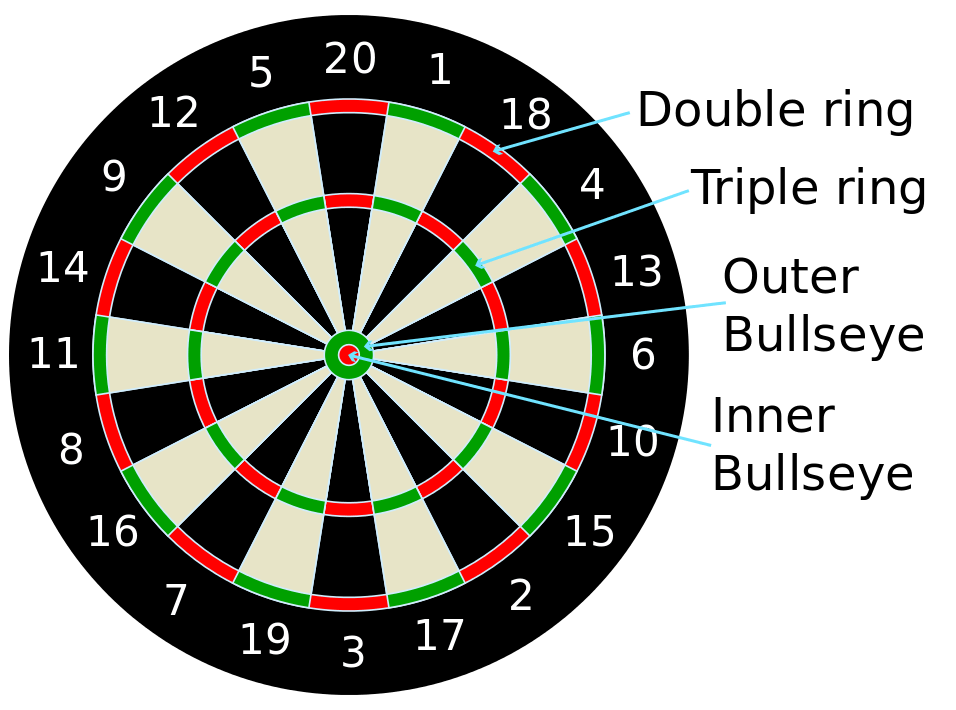

Dart, iç içe renkli halkalardan ve bunları kesen üçgen dilimlerden oluşan bir hedefe, ufak okların (dartların) elle atılarak saplanması suretiyle oynanan bir spor. Dünyada en yaygın oynanan türünde belirli bir skordan başlanarak geriye gidilir ve tam olarak sıfır puana ilk ulaşan taraf o eli kazanır. TDK, İngilizce kökenli darta karşılık olarak oklama sözcüğünü önermiştir.
Dart, Orta Çağda okçular için bir eğitim oyunu olarak başlamıştır. İlk kez İngiltere'de ortaya çıkmıştır.
Hedefe daha iyi gitmesi için arkasına tüy ya da aparey (flight) takılan dart yaklaşık 16 cm uzunluğunda, nişan tahtası ise yaklaşık 45 cm çapındadır. Nişan tahtası, 1'den 20'ye kadar değerlerin yazılı olduğu 20 puan dilimine bölünmüştür.
Genellikle kırmızı renkle sembolize edilen ve bullseye (boğa gözü) olarak bilinen merkezi daire 50 puan değerindedir. Bunu saran küçük yeşil çember (outer bullseye) 25 puan değerindedir. En dıştaki çember, hizasında yazan puanın iki katı; içteki küçük çember, hizasında yazan puanın üç katı değerindedir. Geniş halkalar ise hizalarındaki puan değerindedir. Tahtadaki en yüksek puanlı bölüm, 20 sayısının hizasındaki iç çember kesitidir (3x20=60 puan).
Dünya Dart Federasyonu standartlarına göre dart tahtasının merkezi (bullseye) yerden 173 cm yukarıda olmalı, dart tahtasından atış çizgisine olan "yatay" mesafe 237 cm olmalıdır. Yatay mesafe ölçülürken duvar değil, dart tahtasının oyunculara bakan yüzeyi baz alınır.
Çoğunlukla hedef skorlara göre isimlendirilen dartın 301 / 501 / 701, Cricket, High Score, Shangai, 301 Elimination, Split Score, Rapid Score olarak anılan çeşitleri vardır. Önemli uluslararası turnuvalarda en yaygın oynanan tür 501'dir.
Dünya çapında uygulanan çeşitli spor hava tabancası yarışma stilleri vardır . Müsabaka tarzının standardizasyonu fukiyaya dayanmaktadır.ve Uluslararası Fukiyado Derneği tarafından yönetilmektedir. Standart bir namlu kalibresi ve uzunluğu ile IFA tarafından ana hatları çizilen standart bir dart uzunluğu ve ağırlığı kullanılarak 10 metrelik bir hedef atışıdır. Her ikisi de Cherokee Yıllık Toplama Blowgun Yarışmasına dayanan iki stil daha var. Field Style yarışması, atıcının bir başlangıç çizgisinden hedef kulvara koştuğu, dartları atıp aldığı ve bir sonraki istasyona devam ettiği kış Biatlonuna benzer. Saha uzunluğu, çeşitli yüksekliklerde ve atış mesafelerinde 9 ila 16 hedef ile 400 ila 800 m arasında değişmektedir. Son stil, Uzun Mesafe hedef atışıdır. Hedef 24 cm çapında bir daire ve atış hattı 20 m uzaklıktadır. Her atıcı tarafından en az birinin hedefe saplanması gereken üç dart atılır.
Üfleme tabancası (üfleme borusu veya üfleme tüpü olarak da adlandırılır ) , dart gibi hafif mermileri atmak için uzun ve dar bir tüpten oluşan basit bir menzilli silahtır . Mermiyi borunun içine yerleştirerek ve mermiyi pnömatik olarak itmek için zorunlu ekshalasyon ("darbe") tarafından oluşturulan kuvveti kullanarak çalışır . İtici güç, kullanıcının solunum kaslarının gücü ve akciğerlerinin hayati kapasitesi ile sınırlıdır .